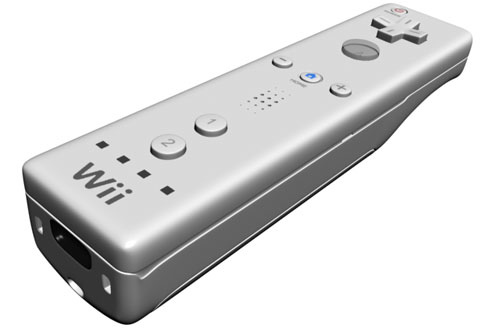

Referencia en diario Público.es  A través de Ramón Vázquez (Gracias 😉 ) me he enterado de que me han citado en el artículo “Un mando que maneja la ciencia” publicado en el diario Público.es. Obijuan